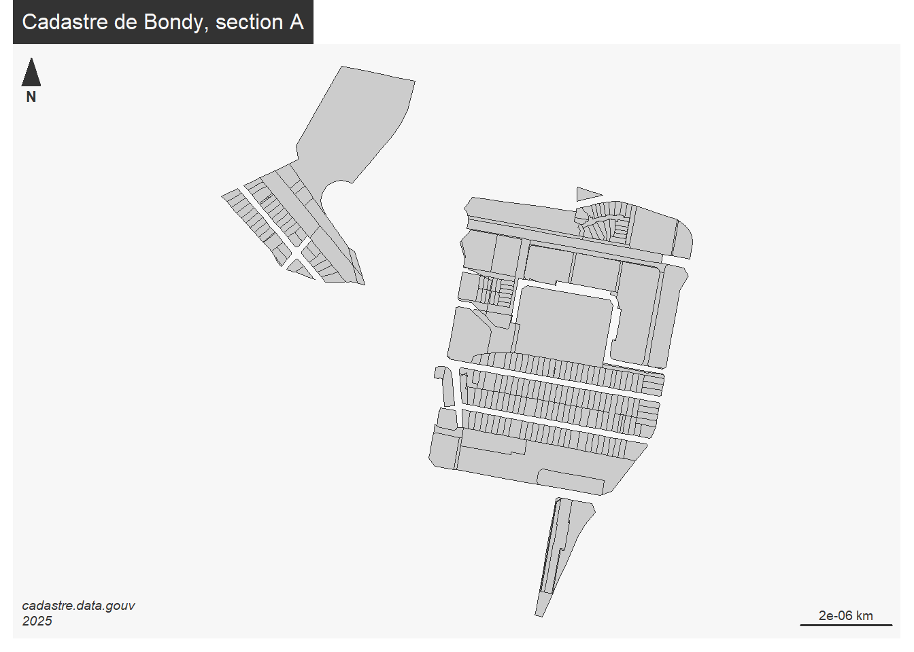
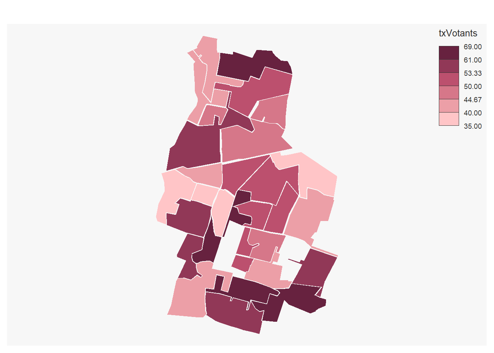

R spatial avec la librairie sf (traitement des objets géographiques) et mapsf (cartographie)
sources :
Ne pas oublier les cheat_sheet
https://riatelab.github.io/mapsf/articles/web_only/cheat_sheet.html# Objets R spatiaux : le dataframe sf
library(sf)## Linking to GEOS 3.9.0, GDAL 3.2.1, PROJ 7.2.1zone <- st_read("data/vote.gpkg", "zone")## Reading layer `zone' from data source
## `D:\sauveGIT\03_coursDashboard\data\vote.gpkg' using driver `GPKG'
## Simple feature collection with 32 features and 5 fields
## Geometry type: MULTIPOLYGON
## Dimension: XY
## Bounding box: xmin: 661088.1 ymin: 6865338 xmax: 663354.7 ymax: 6869043
## Projected CRS: RGF93 / Lambert-93# quel contenu pour le fichier ?
str(zone)## Classes 'sf' and 'data.frame': 32 obs. of 6 variables:
## $ Layer : chr "_Bureau 32" "_Bureau 24" "_Bureau 15" "_Bureau 14" ...
## $ bureauNo_1: chr NA "ECOLE ELEMENTAIRE OLYMPE DE GOUGES" "SALLE MAURICE PETITJEAN" "ECOLE MATERNELLE LEO LAGRANGE" ...
## $ aire : int 129558 260846 253109 229099 104115 230670 54899 91995 70288 140443 ...
## $ numBureau : int 32 24 15 14 12 30 5 9 28 26 ...
## $ txVotants : int NA 50 41 53 55 54 46 50 66 52 ...
## $ geom :sfc_MULTIPOLYGON of length 32; first list element: List of 1
## ..$ :List of 1
## .. ..$ : num [1:21, 1:2] 662713 662894 662926 663008 662925 ...
## ..- attr(*, "class")= chr [1:3] "XY" "MULTIPOLYGON" "sfg"
## - attr(*, "sf_column")= chr "geom"
## - attr(*, "agr")= Factor w/ 3 levels "constant","aggregate",..: NA NA NA NA NA
## ..- attr(*, "names")= chr [1:5] "Layer" "bureauNo_1" "aire" "numBureau" ...Regarder l’indexation du dataframe dans la partie base R. Sélectionner le premier bureau et l’afficher. Quelle est la différence ?
Fusion des bureaux de votes, trouver la fonction et l’appliquer en s’inspirant de l’article 3 du github sf/
# carte avec commande rbase
plot(zone$geom, col = terrain.colors (31),
border = NA,
main = "31 bureaux de vote de Bondy")
# carte avec mapsf
library(mapsf)
mf_map(zone, type = "choro", border = NA,var = "aire")# éliminer les bureaux 31 et 32
zone <- zone [zone$numBureau %in% seq(1,30),]
summary(zone)## Layer bureauNo_1 aire numBureau
## Length:30 Length:30 Min. : 54899 Min. : 1.00
## Class :character Class :character 1st Qu.:102057 1st Qu.: 8.25
## Mode :character Mode :character Median :146437 Median :15.50
## Mean :163750 Mean :15.50
## 3rd Qu.:223232 3rd Qu.:22.75
## Max. :367989 Max. :30.00
## txVotants geom
## Min. :35.00 MULTIPOLYGON :30
## 1st Qu.:42.25 epsg:2154 : 0
## Median :50.00 +proj=lcc ...: 0
## Mean :50.30
## 3rd Qu.:55.00
## Max. :69.00mf_map(zone, type = "choro", pal = "Burg",
border = NA, var = "txVotants")
Mettre un lien entre la cartographie et le fichier de résultat des élections
data <- read.csv("data/bondyElection.csv", fileEncoding = "UTF-8", dec = ",")zone$Layer## [1] "_Bureau 24" "_Bureau 15" "_Bureau 14" "_Bureau 12" "_Bureau 30"
## [6] "_Bureau 05" "_Bureau 09" "_Bureau 28" "_Bureau 26" "_Bureau 27"
## [11] "_Bureau 22" "_Bureau 21" "_Bureau 25" "_Bureau 07" "_Bureau 23"
## [16] "_Bureau 01" "_Bureau 19" "_Bureau 03" "_Bureau 02" "_Bureau 18"
## [21] "_Bureau 29" "_Bureau 08" "_Bureau 17" "_Bureau 13" "_Bureau 20"
## [26] "_Bureau 10" "_Bureau 04" "_Bureau 06" "_Bureau 11" "_Bureau 16"data$Bureau.de.vote## [1] "BV1" "BV2" "BV3" "BV4" "BV5"
## [6] "BV6" "BV7" "BV8" "BV9" "BV10"
## [11] "BV11" "BV12" "BV13" "BV14" "BV15"
## [16] "BV16" "BV17" "BV18" "BV19" "BV20"
## [21] "BV21" "BV22" "BV23" "BV24" "BV25"
## [26] "BV26" "BV27" "BV28" "BV29" "BV30"
## [31] "BV31" "BV32" "TOTAL" "Total en %"Comment recoder pour faire correspondre les clés ?
Faire l’algo
Donner les fonctions R
Faire le script
L6ECSIG Construction et utilisation des SIG